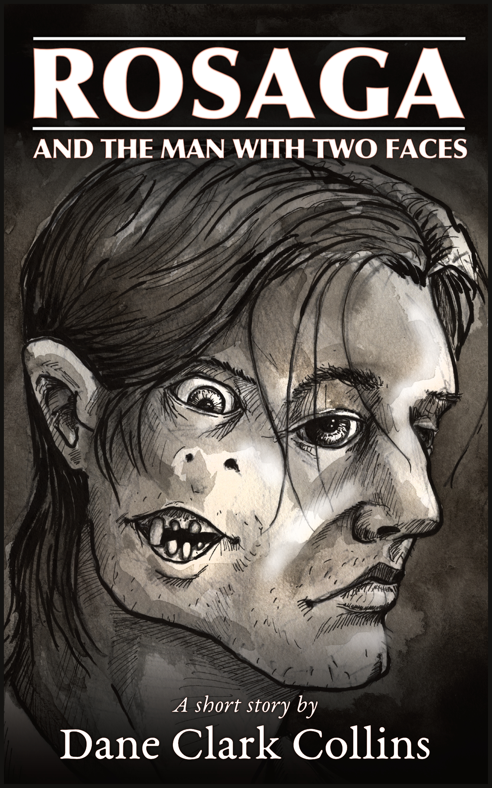

I’m pleased to announce that I have a new short story up on both SagaBorn.com and Amazon. It is available in all major ebook formats for free at SagaBorn.com, or if you’d like to read it on your Kindle, you can get it for $0.99 on Amazon.
Book description
A terrifying fantasy story from Dane Clark Collins, author of Crossroads of the Never.
Long after disappearing on a quest to chase his hallucinatory visions, Dreisin has resurfaced with a story stretching twelve hundred years into the past: a chilling tale of dark magic, cursed love, and a fate far worse than death. This is the tale of Rosaga and the Man with Two Faces.